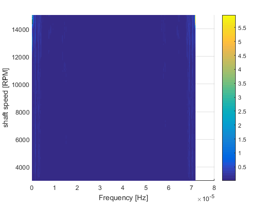

DSP - Laboratory #6
Guilherme Aramizo Ribeiro
Contents
Definitions
TODO replace with experimental data
rpm_nominal_ = 15000; % motor operating speed [rpm] rpm_min_ = rpm_nominal_ / 5; acc_sens_ = 3/(9.81*sqrt(2)); % V/(m/s^2) rot_unbalance_ = [1e-3 1e-4 3.5e-4 2e-5]; orders_ = [1 2 5 7]; motor_func_ = @(t,w) sum(bsxfun(@times, orders_.*sqrt(rot_unbalance_), w).^2 .* ... sin(bsxfun(@plus, 2*pi*bsxfun(@times, orders_, w.*t), rand(size(orders_)))), 2);
Getting calibration factor
Calibrating a signal Input frequency range: [Fmin Fmax] = [149.2 149.2] Hz Input voltage range: [Vmin Vmax] = ?
Fs = 13.1072e6/(256*31) > 300 Hz = 2*Fmax winsize = 476, minimize leakage noavg = 32
% acquisition parameters Fs = 13.1072e6/(256*31); winsize = 476; noavg = 32; range = 5; bits = 24; % TODO replace with experimental data % Simulate signal % time = linspace(0, (winsize*(noavg+2))/Fs, winsize*(noavg+2)).'; % y = myDSP.discretize( ... % (9.81*sqrt(2))*acc_sens_*sin(2*pi*149.2*time), bits, range); data = dlmread('../report_lab06/data/calib.csv', '\t'); time = data(:,1); y = data(:,2); %{ plot(time*1e3, y, 'o-') xlim([0 30]) xlabel('time [ms]'); ylabel('acc voltage [V]') %} % Visualize auto-power yreshaped = myDSP.reshape(y, winsize, 0); win = window(@flattopwin, winsize); gain = [1; 2*ones(winsize-1, 1)] / (mean(win)*winsize); GY = bsxfun(@times, fft(bsxfun(@times, yreshaped, win)), gain); Gyy = squeeze(mean(conj(GY) .* GY, 2)); f = linspace(0, Fs, winsize); figure subplot(211); semilogy(f, sqrt(Gyy)); grid on; grid minor xlim([0 Fs/2]); xlabel('frequency [Hz]') subplot(212); plot(time*1e3, y, 'o-'); xlabel('time [s]'); xlim([0 30]) calib_factor = (9.81*sqrt(2))/0.03417; % Calibration factor [(m/s^2)/V]

Set #1
% Steady state 0.5*rpm speed % Input frequency range: 10th order of the nominal speed % Input voltage range: [Vmin Vmax] = ? % % Fs = 10240 = 13.1072e6/(256*5) > 2*Fmax = 2*(10*(rpm_nominal_/60)) % winsize = 40960 = Fs/0.25, df = Fs/winsize = 0.25 % noavg = 50 % acquisition parameters Fs = 13.1072e6/(256*5); winsize = 40960; noavg = 50; range = 5; bits = 24; % TODO replace with experimental data % time = linspace(0, (noavg+2)*winsize/Fs, (noavg+2)*winsize).'; % rpm = rpm_nominal_ * ones(size(time)) / 2; % tach = square(2*pi*cumsum(rpm/60).*diff([-1/Fs; time])) + randn(size(time))/10; % acc = calib_factor * acc_sens_ * motor_func_(time, rpm/60); data = dlmread('../report_lab06/data/ss.csv', '\t', 1); time = data(:,1) - data(1,1); tach = data(:,4); acc = data(:,2) * calib_factor; %{ figure subplot(311); stairs(time, rpm); xlim([0 30e-3]) subplot(312); stairs(time, tach); xlim([0 30e-3]) subplot(313); stairs(time, acc); xlim([0 30e-3]) %} yreshaped = myDSP.reshape(acc, winsize, 0); yreshaped(:,[1 end]) = []; % remove head and tail win = window(@hann, winsize); gain = [1; 2*ones(winsize-1, 1)] / (mean(win)*winsize); GY = bsxfun(@times, fft(bsxfun(@times, yreshaped, win)), gain); Gyy = squeeze(mean(conj(GY) .* GY, 2)); f = linspace(0, Fs, winsize); figure semilogy(f, sqrt(Gyy)); grid on; grid minor xlim([0 Fs/2]); xlabel('frequency [Hz]'); ylabel('base acceleration [m/s^2]')
Warning: Obsolete syntax. C must be specified with R.
1)
avg_rpm = mean(myDSP.speed_from_tach(time, tach)); % Average RPM
Set #2, #3, #4
% Transient: 0->45s, 0->20s, 0->10s, ranging full rpm bounds % Input frequency range: 10th order of nominal speed % Input voltage range: [Vmin Vmax] = ? % % Fs = 10240 = 13.1072e6/(256*5) > 2*Fmax = 2*(10*(rpm_nominal_/60)) % winsize = 40960 = Fs/0.25, df = Fs/winsize = 0.25 % noavg = 50 % acquisition parameters Fs = 13.1072e6/(256*5); len = 45*Fs; % winsize = 40960; % noavg = 50; range = 5; bits = 24; % time = linspace(0, round(len*1.1)/Fs, round(len*1.1)).'; % % rpm_ = ones(size(time, 1), 3) * rpm_nominal_; % rpm_(time < 45, 1) = rpm_min_ + time(time < 45)*(rpm_nominal_-rpm_min_)/45; % rpm_(time < 20, 2) = rpm_min_ + time(time < 20)*(rpm_nominal_-rpm_min_)/20; % rpm_(time < 10, 3) = rpm_min_ + time(time < 10)*(rpm_nominal_-rpm_min_)/10; % % tach = square(2*pi*bsxfun(@times, cumsum(rpm_/60), diff([-1/Fs; time]))); % % acc = calib_factor * acc_sens_ * [motor_func_(time, rpm_(:,1)/60), ... % motor_func_(time, rpm_(:,2)/60), motor_func_(time, rpm_(:,3)/60)]; data1 = dlmread('../report_lab06/data/slow3.csv', '\t', 1); data2 = dlmread('../report_lab06/data/mid2.csv', '\t', 1); data3 = dlmread('../report_lab06/data/fast2.csv', '\t', 1); len = max([size(data1,1), size(data2,1), size(data3,1)]); time = (1:len).'/Fs; tach = zeros(len, 3); acc = zeros(len, 3); tach(1:size(data1,1),1) = data1(:,4); tach(1:size(data2,1),2) = data2(:,4); tach(1:size(data3,1),3) = data3(:,4); acc(1:size(data1,1),1) = data1(:,2) * calib_factor; acc(1:size(data2,1),2) = data2(:,2) * calib_factor; acc(1:size(data3,1),3) = data3(:,2) * calib_factor; plot(time, tach)
Warning: Obsolete syntax. C must be specified with R. Warning: Obsolete syntax. C must be specified with R. Warning: Obsolete syntax. C must be specified with R.

2) Tachometer
rpm = [myDSP.speed_from_tach(time, tach(:,1)), myDSP.speed_from_tach(time, tach(:,2)), ... myDSP.speed_from_tach(time, tach(:,3))]; plot(time, rpm); grid on; grid minor xlabel('frequency [Hz]'); ylabel('Shaft speed [RPM]'); ylim([0 5000])
3) Color map
noblocks = 100; time_range = [45 20 10]; for k = 1 : 3 winsize = round((Fs*time_range(k))/noblocks); % 100 evenly spaced RPM bins y = acc(:, k); yreshaped = myDSP.reshape(y, winsize, 0); yreshaped = yreshaped(:,(1:noblocks) + 1); % remove head and tail win = window(@hann, winsize); gain = [1; 2*ones(winsize-1, 1)] / (mean(win)*winsize); GY = bsxfun(@times, fft(bsxfun(@times, yreshaped, win)), gain); Gyy = filter(ones(1,5)/5, 1, conj(GY) .* GY, [], 2); f = linspace(0, Fs, winsize); [freqs, rpms] = meshgrid(f, linspace(rpm_min_, rpm_nominal_, 100)); accs = sqrt(Gyy).'; figure; surf(freqs, rpms, accs, 'EdgeColor','None'); view(2); xlim([0 Fs/2]); ylim([rpm_min_, rpm_nominal_]) colorbar; xlabel('Frequency [Hz]'); ylabel('shaft speed [RPM]') end

4) Order tracking
FFT, constant order bandwidth
noblocks = 100; time_range = [45 20 10]; for k = 1 : 3 winsize = round((Fs*time_range(k))/noblocks); % 100 evenly spaced RPM bins angle = cumsum(rpm(time<time_range(k),k)*(2*pi/60)); R = angle(end) / noblocks; angle = cumsum(rpm(:,k)*(2*pi/60)); RR = angle(end) / noblocks; xx = cumsum(rpm(:,k)); xx = xx * t(end)/xx(end); y = interp1(time, acc(:, k), xx); yreshaped = myDSP.reshape(y, winsize, 0); yreshaped = yreshaped(:,(1:noblocks) + 1); % remove head and tail win = window(@hann, winsize); gain = [1; 2*ones(winsize-1, 1)] / (mean(win)*winsize); GY = bsxfun(@times, fft(bsxfun(@times, yreshaped, win)), gain); Gyy = filter(ones(1,5)/5, 1, conj(GY) .* GY, [], 2); f = linspace(0, winsize/R, winsize); [freqs, rpms] = meshgrid(f, linspace(rpm_min_, rpm_nominal_, 100)); accs = sqrt(Gyy).'; figure; surf(freqs, rpms, accs, 'EdgeColor','None'); view(2); ylim([rpm_min_, rpm_nominal_]) colorbar; xlabel('Frequency [Hz]'); ylabel('shaft speed [RPM]') end